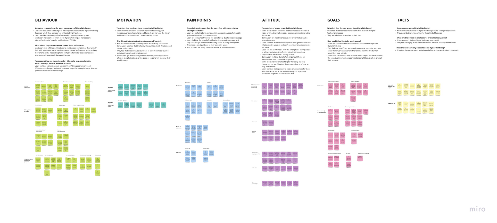

Technology is becoming ubiquitous in everyday life, connecting, informing, and empowering the user like never before. However, as technology becomes more integral to everything we do, it can sometimes distract us from the things that matter most to us. The challenge designer’s face is how to ensure technology improves life, not distract from it. What do users need to develop their own sense of digital wellbeing? So that life, not the technology in it, stays front and centre.
Goal
Users have an increasing number of tools, apps, and device settings to help them manage their own digital wellbeing. However, without the necessary knowledge or insights, the mere presence of tools is insufficient.
How might we equip our users with the necessary knowledge and skills to form wellbeing strategies that are right for them, and leverage the tools and options available to them in an optimal way?
Challenge Statement
- Digital wellbeing has recently been introduced as the new definition for manufacturers, scientists, psychologists to describe the interactions between people and technology in a measurable way. Thus, while the smartphone was established nearly 2 decades ago, the concept of digital wellbeing is still new to users.
- Users are diverse, and the concept of wellbeing is very subjective to people according to their cultures, personalities and demographics. With such a large number of influencing variables, it will be challenging to identify a consistent scale for users’ awareness of digital wellbeing.
- Manufacturers introduce wellbeing features as a way to enhance the awareness of wellbeing while third party wellbeing apps may have mixed motivations. Therefore, this might create a gap in users understanding of digital awareness, with perception being driven by curiosity rather than self-consciousness. This might affect our insights of using wellbeing apps/tools/features.
- Project is limited in 2 weeks of research and 1 sprint. Time limitation is challenging to us and will result in a smaller scale of research and findings which might cause some biases in the final result.
Project Approach
- We began with making assumptions according to the provided problem space. Following this, we conducted secondary research to broaden our understanding about Digital Wellbeing.
- After compiling our thoughts and findings, we assigned team members around the project goals and developed a research plan and methods. At this point, we decided to implement quantitative and qualitative research, through a survey and interviews, to achieve our research objectives. We decided to skip Personas because our research space mainly focuses on behaviours and attitude instead of demographic. Besides, Google wellbeing tools are not targeting specific groups but Google Pixel phone users in general.
- Once the research was complete, we analyzed the results with affinity mapping and customer journey mapping to identify any patterns and journeys that could aid in answering the research objectives.
Competitive Smartphone Analysis
As part of our research in wellbeing domain, we conducted a competitive study between Google, Apple, and Samsung. We analysed how these brands handle wellbeing and what features they offer for their users. Apart from the inbuilt wellbeing features, we looked into how wearables add value by tracking sleep, heart rate, blood pressure and exercise.
Interviews
Qualitative research was conducted through the interviewing of 31 smartphone users. 22 Android users and 09 IOS users. The prepared questions aim to understand the behaviours and attitude of user towards digital wellbeing in general, as well as existing wellbeing tools/apps/features. From that, we are able to understand their motivations and pain points of how they pursuing digital wellbeing.
Affinity Map - Interviews
https://miro.com/app/board/o9J_kugJSJg=/?moveToWidget=3074457347362016023&cot=13
|
How users were aware of Digital Wellbeing-
The users were initially became aware of Digital wellbeing by their own smartphones and other resorces which motivated them are social media, school as well as from family members. |
What efforts they take to reduce screen time/self control-
Strategies varied from very strict to relaxed such as setting limitation of use, finding the alternative modes in spare time and reducing apps gradually. |
|
Using their phone for everyday things -
Users feel that their smartphone plays different roles in their lives. Some are listed below which leads to increase of usgae of their smartphones.
|
The things that motivates them towards self-control -
Some users feel that their personal life & family life could be at risk through excessive usage. Some users get motivated by the reward their phone applications offer on completing the exercise goals or on generally knowing their weekly usage |
|
The existing pain-point that the users face with their existing smartphone habits-
Users are suffering from temptation, addiction, distraction, reluctant habits as a large barrier to stop them from implementing wellbeing to their life. Users are facing health issues like lack of sleep due to excessive usage |
How would they like to be made aware?
|
Are users unaware of Digital Wellbeing?
|
Mindset of people
|
Survey
To understand the awareness of Digital Wellbeing among the general public, we surveyed 53 smartphone users across a diverse age group. The objective was to understand their usage patterns, wellbeing awareness levels, the actions they have taken in their lives for wellbeing and how they would like to be informed
Affinity Maps - Survey
https://miro.com/welcomeonboard/zo01JACoEkyf2qsakUKlfHz3l2pLmopDoL5gk9Yv7jVOR4YqGzu2D0hWlxBw2iHz
How users were aware of Digital Wellbeing-
|
Pain-points faced by users caused by their smartphone habits -
Addition, temptation and the overwhelming of phone stop them to pursue healthy phone usage. |
|
The mindset of people towards Digital Wellbeing -
Addition, temptation and the overwhelming of phone stop them to pursue healthy phone usage. |
What is it that the user needs from Digital Wellbeing -
Users need to have more information and incentive to be able to keep pursuing Digital wellbeing |
Journey Flow
After analyzing findings and insights from both qualitative research and quantitative research, we designed Customer Journey Maps to visualise the journey of how to pursue and implement digital wellbeing in users lives. There are two types of Customer Journey Maps-
Users who are aware of Digital wellbeing but not motivated or no interested
Users who are unaware of Digital wellbeing nd want to be made aware
https://miro.com/welcomeonboard/SgOxIoYD96OqZvcHM5Srfq4Tg3e8mJf5q0MV7E5FKwKHYTl8CFzyuXM8rrcgfEXQ
Affinity Maps - Survey
https://miro.com/welcomeonboard/zo01JACoEkyf2qsakUKlfHz3l2pLmopDoL5gk9Yv7jVOR4YqGzu2D0hWlxBw2iHz